Caso de estudio · Maratón Medellín
2026
Una identidad que convierte el ritmo de la ciudad en sistema visual.
La edición 2026 se construye mediante una identidad dinámica basada en bloques verticales, gradientes intensos, textura granulada, tipografía de alto impacto y una paleta adaptable.
01 · Lanzamiento y redes
La comunicación digital emplea variaciones cromáticas por bloque, composiciones verticales y fotografías integradas dentro del sistema gráfico.
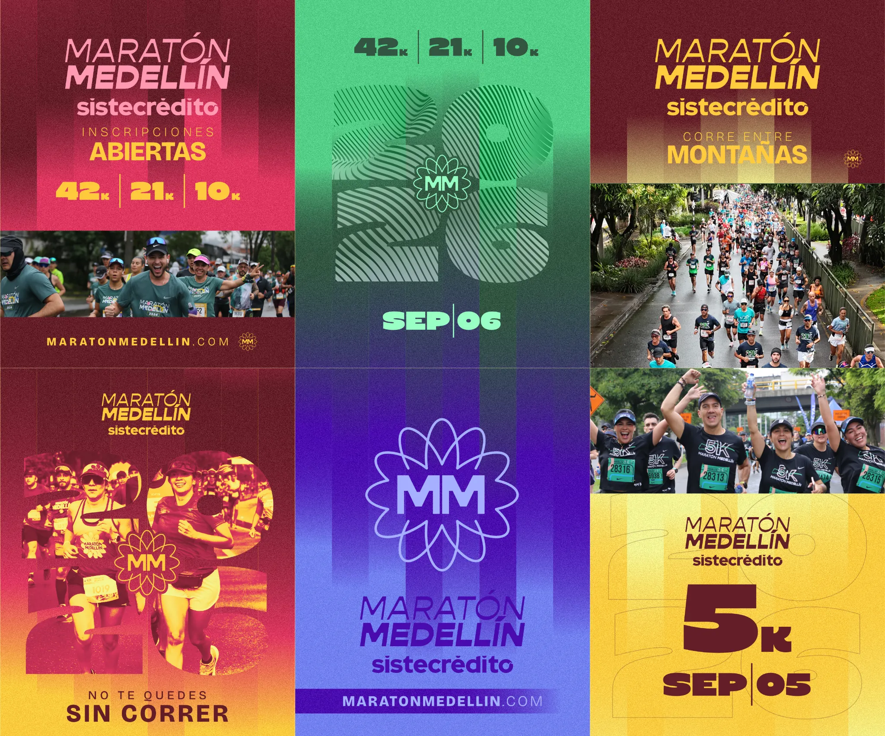
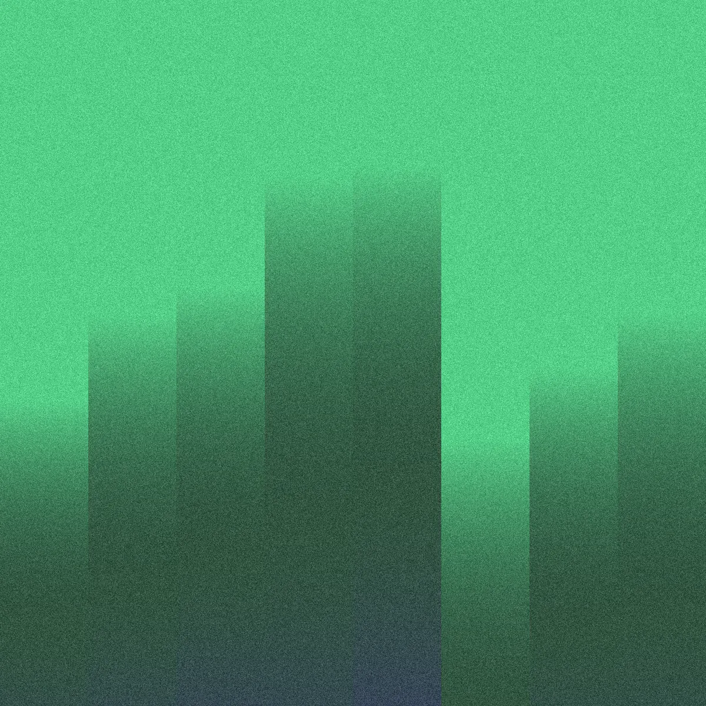
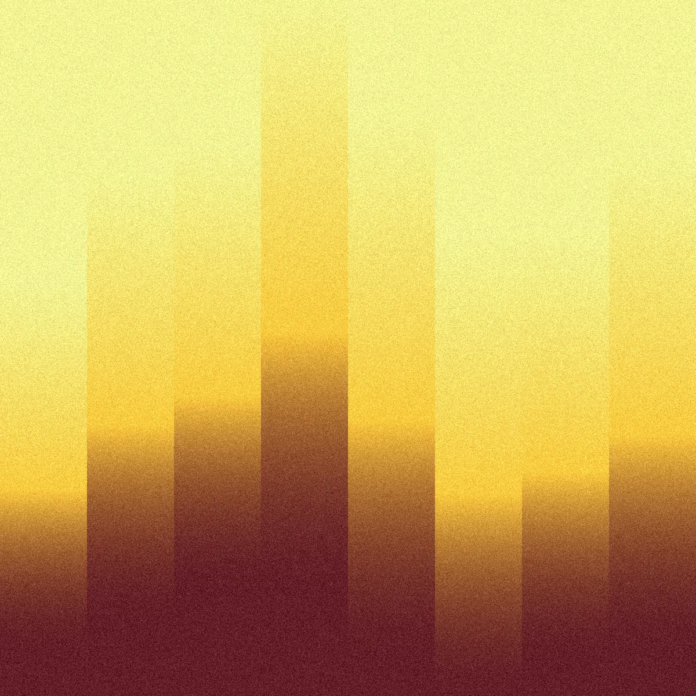
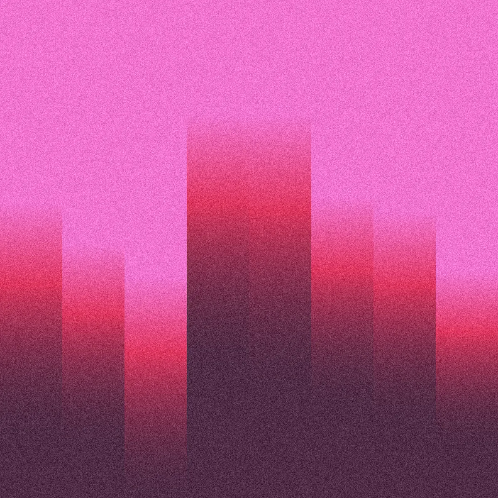
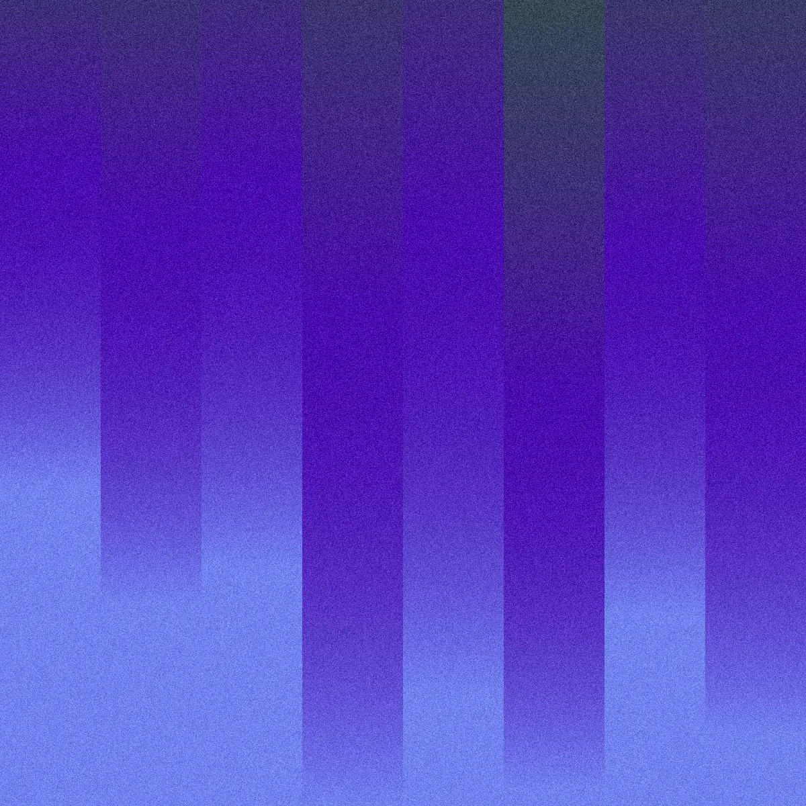
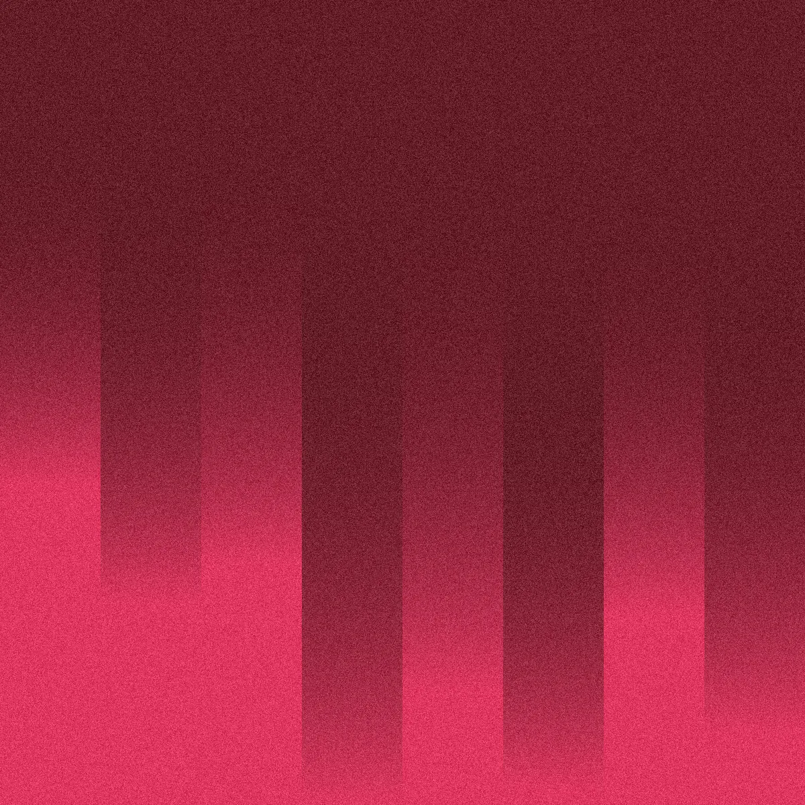
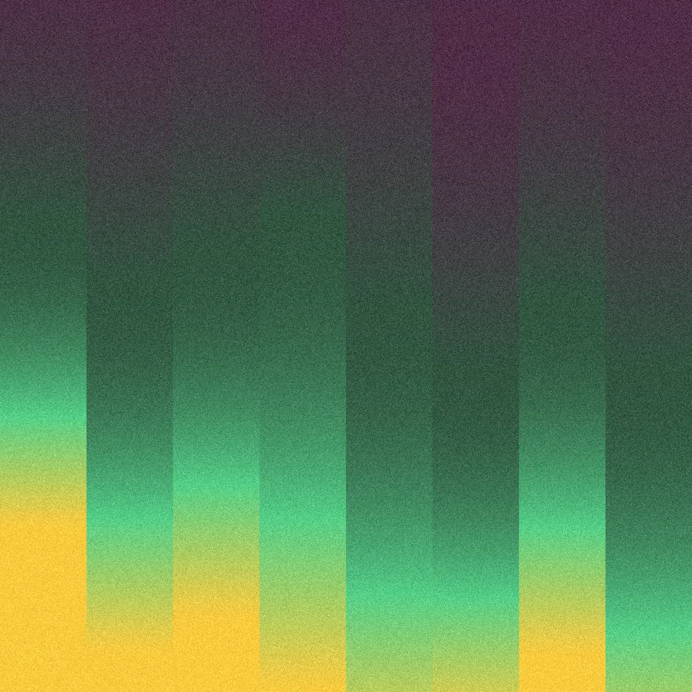
02 · Gran formato
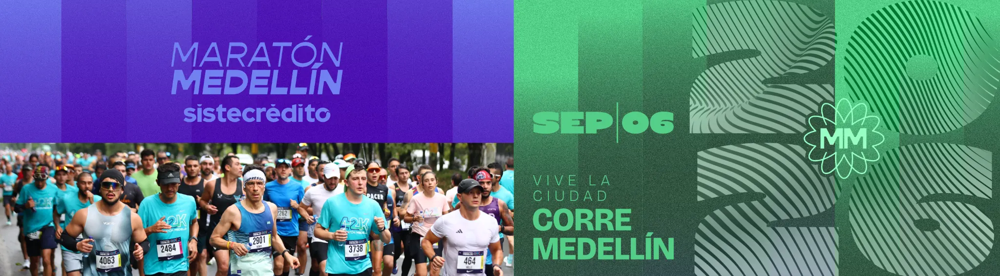
03 · Números de competencia
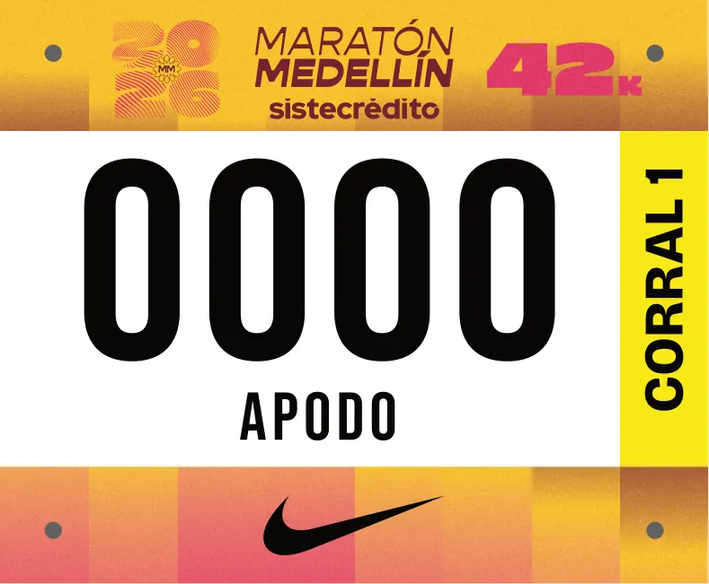
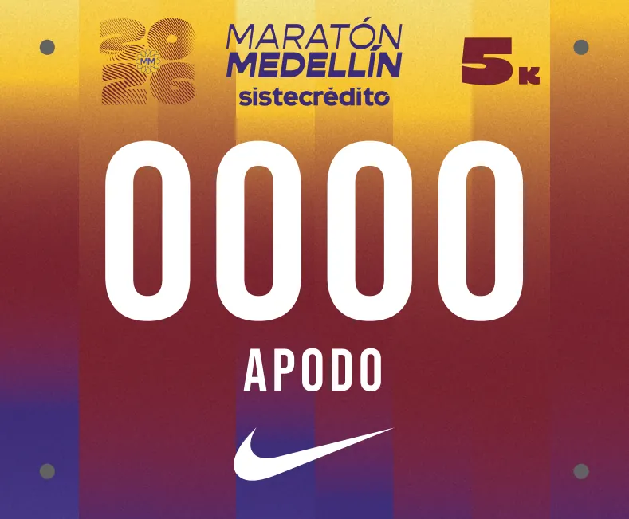
04 · Merchandising y kit
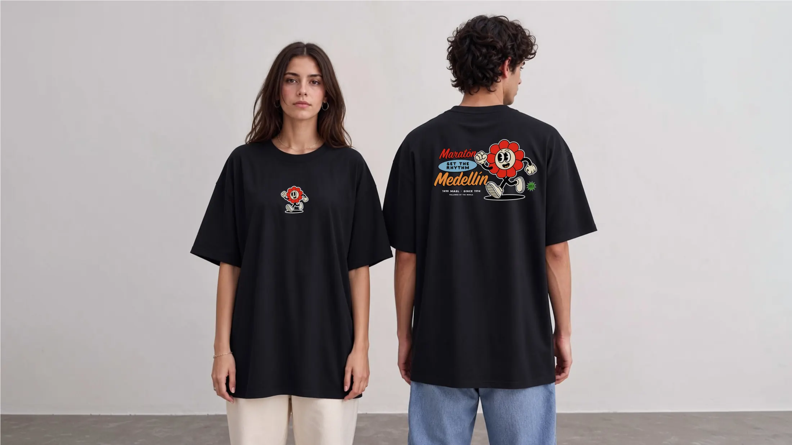
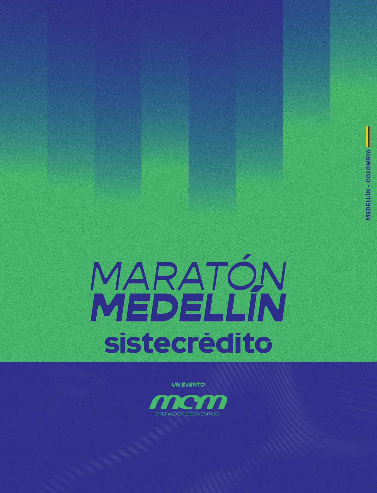
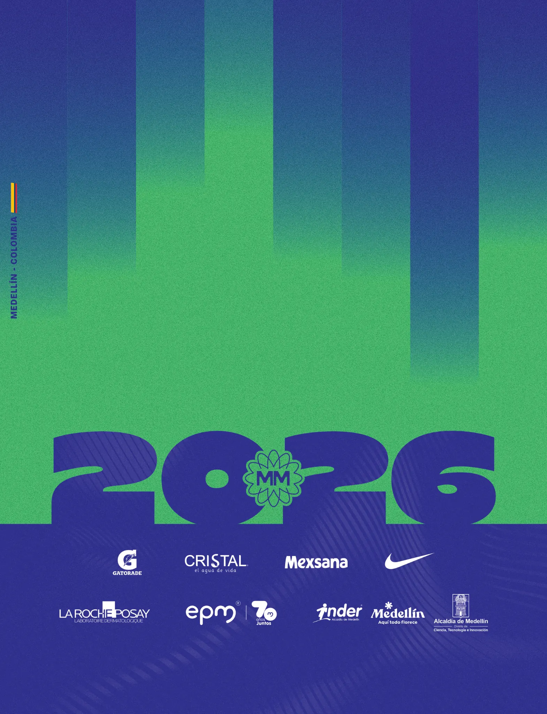